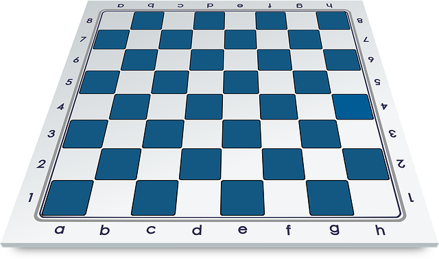

 The Italian Game
Moves
- e4 e5
- Nf3 Nc6
- Bc4
The point is to control the center quickly with your pawn and knight and then put your bishop on its most dangerous square. You are also preparing to castle to safety.
The point is to control the center quickly with your pawn and knight and then put your bishop on its most dangerous square. You are also preparing to castle to safety.
The Sicilian Defense is the most popular choice of aggressive players with the black pieces. Often White will play 2.Nf3 and 3.d4 which will gain central space, but it allows Black to benefit by exchanging a central pawn for a bishop's pawn.
The French Defense is one of the first strategic openings every chess player should learn. After e5 (now or later), both sides will have pawn chains. One risk of the French Defense is that the c8-bishop can be very hard to develop.
The Ruy Lopez is one of the oldest and most classic of all openings. It is named after a Spanish bishop who wrote one of the first books on chess. The Ruy Lopez attacks the knight which defends the e5-pawn. White hopes to use this attack to build more pressure on Black's central pawn.
The Slav Defense is a very solid opening which defends the d5-pawn with another pawn. Most of Black's pieces can develop to natural squares, but Black will usually have a little less space and will have to find a good place for their b8-knight.